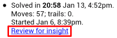
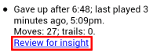

Puzzle Details
- See what you missed in a puzzle by finding and tapping the "Review
for insight" link:

This appears after you complete the puzzle, either by solving it or by
giving up:

- Explore the puzzle's solution with that same link. See
the Puzzle Solution page for more information.
- Try the puzzle again with the Play command.
- Show the collection with the link that says which puzzle collection
this one is in.
 (On a small screen) List all the puzzles by tapping the Sudoku
Insight icon on the left of the title bar. See Listing
Puzzles.
(On a small screen) List all the puzzles by tapping the Sudoku
Insight icon on the left of the title bar. See Listing
Puzzles.
Symmetries
The clues in a Sudoku are sometimes arranged in a symmetrical pattern, or close
to one. These are the symmetries used and recognized by the app:
- classic: the 180° rotational symmetry that most Sudokus exhibit.
Clues come in pairs on opposite sides of the center square.
- diagonal: mirror symmetry across the main diagonal.
- mirror: mirror symmetry across the vertical axis.
- double mirror: mirror symmetries across the horizontal and vertical
axes.
- rotational: 90° rotational symmetry.
- blockwise: each block's clues are in the same pattern as the 2
other blocks diagonal to it.
- none: none of the above.